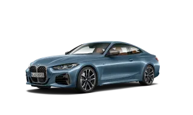
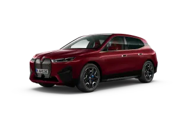

BMW 2 Серии
BMW 2 серии Coupe

Мускулистые пропорции и спортивная динамика: познакомьтесь с новым BMW 2 серии Coupe.
Благодаря колее, расширенной на 31 мм по сравнению с предшественником, и уникальной в своем классе заднеприводной архитектуре новый BMW 2 серии Coupe отличается невероятной точной и острой управляемостью.
А его линейка мощных двигателей обеспечивает сочетание впечатляющей динамики и экономичности.
BMW M240i xDrive Coupe:
Расход топлива, л/100 км (в смешанном цикле): 8,0
Выбросы CO₂, г/км (в смешанном цикле): 185
BMW 220d Coupe:
Расход топлива, л/100 км (в смешанном цикле): 4,8
Выбросы CO₂, г/км (в смешанном цикле): 125
BMW 2 серии Gran Coupe

Не только удовольствие от вождения классического купе, но и невероятные впечатления: первый BMW 2 серии Gran Coupe привносит в сегмент компактных автомобилей новый формат воплощения сильного и авторитетного характера. Кроме всего прочего, модель отличают бескомпромиссность и яркий стиль, недвусмысленно намекающие на серьезные амбиции. Не элегантный, а экстравагантный. Не традиционный, а оригинальный. Не обычный, а экстраординарный. Благодаря первоклассным технологиям и тщательно подобранным динамическим характеристикам BMW 2 серии Gran Coupe выделяется на общем фоне и движется своим собственным путем.
BMW 218i Gran Coupe
Мощность двигателя: 140 л.с
Расход топлива: 5,9 л/100 км
Разгон (0–100 км/ч): 8,7 с
BMW M235i xDrive Gran Coupe
Мощность двигателя: 306 л.с.
Расход топлива: 7,6 л/100 км
Разгон (0–100 км/ч): 4,9 с
BMW 3 Серии
BMW 3 серии
Едва выехав на дорогу, новый BMW 3 серии оставляет позади предрассудки и опережает самые смелые ожидания. В очередной раз легендарная модель является в новой ипостаси. Новый дизайн символизирует наступление новой эры.
В движение совершенный спортивный седан приводится еще более мощными и экономичными двигателями.
Новое решение: достаточно сказать: «ОК, BMW», — после чего новый автомобиль BMW 3 серии начнет распознавать голос и практически предугадывать ваши желания.
BMW 320i xDrive
Мощность двигателя: 184 л.с
Расход топлива: 6,8 л/100 км
Разгон (0–100 км/ч): 7,6 с
BMW 320d xDrive
Мощность двигателя: 190 л.с
Расход топлива: 5,0 л/100 км
Разгон (0–100 км/ч): 6,9 с
BMW 4 Серии
BMW 4 серии Coupe
Бескомпромиссный и неповторимый: новый BMW 4 серии Coupe решительно и элегантно разрушает стереотипы. Его независимый дизайн и классический купеобразный силуэт напоминают о легендарных моделях прошлого, и в то же время подчеркивают прогрессивный характер автомобиля. Небольшая масса напрямую влияет на поведение модели на дороге: впечатляющая маневренность и запоминающаяся динамика заставляют сердце владельца биться чаще. Мощное спортивное купе окутано аурой недосягаемости, что делает его еще более привлекательным.
BMW 420i Coupe
Мощность двигателя: 184 л.с.
Расход топлива: 6,4 л/100 км
Разгон (0–100 км/ч): 7,5 с
BMW M440i xDrive Coupe
Мощность двигателя: 387 л.с.
Расход топлива: 7,8 л/100 км
Разгон (0–100 км/ч): 4,5 с
BMW 420d Coupe
Мощность двигателя: 190 л.с.
Расход топлива: 5,2 л/100 км
Разгон (0–100 км/ч): 7,2 с
BMW 420d xDrive Coupe
Мощность двигателя: 190 л.с.
Расход топлива: 5,2 л/100 км
Разгон (0–100 км/ч): 7,5 с
BMW 4 серии Gran Coupe

Выразительный дизайн, спортивная управляемость и просторный салон для повседневной эксплуатации: новый BMW 4 серии Gran Coupe впечатляет сочетанием всех своих качеств. Благодаря высокому уровню комфорта, а также просторному салону с пятью полноценными посадочными местами и вместительным багажным отделением этот элегантный пятидверный автомобиль в кузове Gran Coupe станет Вашим идеальным спутником в любой ситуации.
BMW 4 серии Cabrio
Новое проявление свободы: независимый и прогрессивный стиль в сочетании с элегантным салоном делают новый BMW 4 серии Cabrio абсолютно уникальным автомобилем, не признающим никаких границ.
Азартная управляемость кабриолета гарантирует спортивные эмоции от вождения и подчеркивает его особенно сильную страсть к свободе и независимости.
BMW 420i Cabrio
Мощность двигателя: 184 л.с
Расход топлива: 6,6 л/100 км
Разгон (0–100 км/ч): 8,2 с
BMW M440i xDrive Cabrio
Мощность двигателя: 387 л.с.
Расход топлива: 8,2 л/100 км
Разгон (0–100 км/ч): 4,9 с
BMW 5 Серии
BMW 5 серии
BMW 5 серии воплощает собой современный седан бизнес-класса. Модель отличается стильными атлетичными формами, динамичным силуэтом и лаконичным дизайном.
Гладкие поверхности и четко очерченные контуры формируют элегантный экстерьер современного и высокотехнологичного автомобиля. Инновационные технологии и спортивное оснащение создают изысканный и функциональный интерьер.
Невероятная динамика и инновационные технологии BMW 5 серии дополняют высочайший уровень комфорта, безопасность и, самое главное, непередаваемое удовольствие от вождения, которое автомобиль дарит как в каждодневных, так и в дальних поездках.
BMW 520i
Мощность двигателя: 184 л.с
Расход топлива: 6,8 л/100 км
Разгон (0–100 км/ч): 7,8
с
BMW 530i xDrive
Мощность двигателя: 249 л.с
Расход топлива: 7,3 л/100 км
Разгон (0–100 км/ч): 6,0 с
BMW 530d xDrive
Мощность двигателя: 249 л.с
Расход топлива: 5,9 л/100 км
Разгон (0–100 км/ч): 5,5 с
BMW 6 Серии
BMW 6 серии GT
Утонченность в каждой детали: BMW 6 серии GT выступает синонимом элегантности и уникального дизайна,комфорта и незаурядных ходовых качеств. Выразительный экстерьер, украшенный решеткой радиатора новой формы и модернизированными светящимися элементами фар, подчеркивающими уникальность оптики автомобиля, свидетельствуют о прогрессивном характере модели. Изысканный интерьер, выполненный из высококачественных материалов и дополненный инновационными функциями, создает особое ощущение роскоши и простора. Добавьте сюда идеальные настройки ходовой части, и вы поймете, что даже в самой долгой поездке на BMW 6 серии GT время пролетит незаметно.
BMW 630i GT
Мощность двигателя: 249 л.с.
Расход топлива: 7,2 л/100 км
Разгон (0–100 км/ч): 6,3 с
BMW 640i xDrive GT
Мощность двигателя: 340 л.с.
Расход топлива: 8 л/100 км
Разгон (0–100 км/ч): 5,2 с
BMW 620d xDrive GT
Мощность двигателя: 190 л.с.
Расход топлива: 5,6 л/100 км
Разгон (0–100 км/ч): 8 с
BMW 630d xDrive GT
Мощность двигателя: 249 л.с.
Расход топлива: 5,7 л/100 км
Разгон (0–100 км/ч): 6,2 с
BMW 7 Серии
BMW 7 серии

Совершенные характеристики, максимальное удовольствие. BMW 7 серии обращает на себя внимание внушительным обликом, исключительной мощностью и максимальным комфортом. BMW 750Li с новым 8-цилиндровым бензиновым двигателем BMW TwinPower Turbo и интеллектуальной системой полного привода xDrive в стандартной комплектации рожден, чтобы стать безоговорочным лидером.
Эмоциональность элегантного дизайна и особая атмосфера роскоши внутреннего пространства с высоким качеством отделки, разнообразием декоративных элементов и технических инновационных решений поднимают новую модель на вершину класса «люкс».
BMW 730i
Мощность двигателя: 249 л.с.
Расход топлива: 7 л/100 км
Разгон (0–100 км/ч): 6,5 с
BMW 730d xDrive
Мощность двигателя: 249 л.с.
Расход топлива: 6 л/100 км
Разгон (0–100 км/ч): 6,3 с
BMW 740d xDrive
Мощность двигателя: 320 л.с.
Расход топлива: 6,1 л/100 км
Разгон (0–100 км/ч): 5,3 с
BMW 7 серии Long

В динамическом потенциале нового BMW M760Li xDrive с 12-цилиндровым бензиновым двигателем сомневаться не приходится. На это намекают лакокрасочное покрытие цвета «Морозный Серебристый Кашемир металлик» и 20” легкосплавные колесные диски V-Spoke. Внушительность облика подчеркивают широкий передний бампер с массивными воздухозаборниками и развитыми порогами.
Отличительными особенностями модели выступают декоративные элементы цвета «Серый Церий», такие как рамка и ламели решетки радиатора, корпуса наружных зеркал заднего вида и надписи на задней части кузова.
Сочетание обивки кожей Merino цвета «Тартуфо» BMW Individual и декоративных планок «Черный рояльный лак» подчеркивают высокое качество материалов внутреннего оформления, а кожаное рулевое колесо M, площадка М для отдыха левой ноги и накладки на педали М привносят в дизайн интерьера спортивные штрихи.
BMW 740Li xDrive
Мощность двигателя: 340 л.с
Расход топлива: 8,4 л/100 км
Разгон (0–100 км/ч): 5,1 с
BMW 730Ld xDrive
Мощность двигателя: 249л.с
Расход топлива: 6,2 л/100 км
Разгон (0–100 км/ч): 6,4 с
BMW 740Ld xDrive
Мощность двигателя: 320 л.с
Расход топлива: 6,2 л/100 км
Разгон (0–100 км/ч): 5,4 с
BMW 8 Серии
BMW 8 серии Coupe
Учащает пульс, создан для ярких личностей. Новый BMW 8 серии Coupe — сочетание спортивного характера и эксклюзивности автомобилей BMW класса «люкс» — новый стандарт эстетического удовольствия.
BMW 840i xDrive Coupe
Мощность двигателя: 340 л.с.
Расход топлива: 8,3 л/100 км
Разгон (0–100 км/ч): 4,7 с
BMW M850i xDrive Coupe
Мощность двигателя: 530 л.с.
Расход топлива: 10,7 л/100 км
Разгон (0–100 км/ч): 3,7 с
BMW 840d xDrive Coupe
Мощность двигателя: 320 л.с.
Расход топлива: 6,6 л/100 км
Разгон (0–100 км/ч): 4,9 с
BMW 8 серии Cabrio
BMW 8 серии Cabrio — олицетворение спортивной роскоши, характерный представитель BMW класса «люкс», прогрессивный стиль которого выражает максимальную привлекательность и уверенность. Модель с откидным верхом представляет собой захватывающий и быстрый спортивный автомобиль, созданный с использованием самых передовых технологий и отличающийся эмоциональным дизайном для выдающихся динамики и управляемости. Автомобиль соответствует самым серьезным амбициям, выводит свободу и удовольствие от вождения на новый уровень.
BMW 840i xDrive Cabrio
Мощность двигателя: 340 л.с.
Расход топлива: 8,7 л/100 км
Разгон (0–100 км/ч): 4,9 с
BMW M850i xDrive Cabrio
Мощность двигателя: 530 л.с.
Расход топлива: 10,7 л/100 км
Разгон (0–100 км/ч): 3,9 с
BMW 8 серии Gran Coupe
Динамика и роскошь создают уникальное сочетание: BMW 8 серии Gran Coupe представляет собой завораживающий четырехдверный спортивный автомобиль, отличающийся невероятным внутренним простором. Дизайн модели является совершенным воплощением аутентичных форм. Его элементы воплощают совершенно новый язык дизайна спортивных автомобилей класса «люкс», передающий необузданную мощь и поразительную маневренность.
BMW 8 серии Gran Coupe выполняет обещание бескомпромиссной спортивности, километр за километром. Инновационные двигатели не только отправляют стрелку тахометра к новым высотам, но и заставляют пульc учащенно биться. Пульс водителя и всех пассажиров, которых окружает эксклюзивная и одновременно невероятно спортивная атмосфера.
BMW 840i xDrive Gran Coupe
Мощность двигателя: 340 л.с.
Расход топлива: 8,5 л/100 км
Разгон (0–100 км/ч): 4,9 с
BMW M850i xDrive Gran Coupe
Мощность двигателя: 530 л.с.
Расход топлива: 10,7 л/100 км
Разгон (0–100 км/ч): 3,9 с
BMW 840d xDrive Gran Coupe
Мощность двигателя: 320 л.с.
Расход топлива: 6,9 л/100 км
Разгон (0–100 км/ч): 5,1 с
BMW Серии M
BMW M240i xDrive

Радикально спортивный. Революционный и независимый. Новый BMW M240i xDrive Coupe сочетает в себе впечатляющую мощность, азартную управляемость и непревзойденную динамику. Это делает его бесконечным источником чистого восторга. Неважно, ускоряетесь ли Вы, проходите поворот или стремительно мчитесь по прямой – его стрелка тахометра поднимается, ускоряя пульс и повышая уровень адреналина в крови. Каждый элемент привлекательного трехобъемного дизайна BMW M240i xDrive Coupe подчеркивает его спортивные амбиции, максимально ярко раскрывая характер модели.
BMW M240i xDrive Coupe:
Расход топлива, л/100 км (в смешанном цикле): 8,0
Выбросы CO2, г/км (в смешанном цикле): 185
BMW M235i xDrive Gran Coupe

Вызывающая привлекательность для тех, кто знает, чего хочет. Ярко выраженный атлетизм BMW M235i xDrive Gran Coupe впечатляет со всех ракурсов: этот эффект достигается благодаря выраженной линии плеч, пологой линии крыши и мощной задней части кузова. Идеально настроенные компоненты трансмиссии и исключительно мощный двигатель позволяют спортивному купе устанавливать новые стандарты в своем сегменте. В интерьере модели доминируют эксклюзивные дизайнерские элементы серии M и используются передовые технологии, в том числе система голосового управления BMW Intelligent Personal Assistant. Для новых целей — и отсутствия ограничений.
BMW 218i Gran Coupe
Мощность двигателя: 140 л.с
Расход топлива: 5,9л/100 км
Разгон (0–100 км/ч): 8,7с
BMW M235i xDrive Gran Coupe
Мощность двигателя: 306 л.с.
Расход топлива: 7,6 л/100 км
Разгон (0–100 км/ч): 4,9 с
BMW M3 Competition

Автомобили M BMW 3 серии сочетают в себе атлетичные пропорции и классический четырехдверный трехобъемный дизайн с фирменной спортивностью M. Возглавляет пару эффектных седанов BMW M3 Competition с феноменальными 510 л.с. и 650 Нм крутящего момента. Этот автомобиль, оснащенный высокомощным двигателем BMW M TwinPower Turbo, 8-ступенчатой АКПП M Steptronic с технологией Drivelogic, опциональной системой полного привода M xDrive*, активным дифференциалом M и многочисленными технологиями, позаимствованными в автоспорте, гарантирует максимальные динамические характеристики – как в повседневной эксплуатации, так и на гоночных трассах. BMW M340i xDrive: помимо привлекательного дизайна этот спортивный седан впечатляет особенно сбалансированным сочетанием атлетизма, экономичности и практичности в повседневной эксплуатации.
BMW M4 Competition Coupe
Автомобили M BMW 4 серии Coupe впечатляющим образом сочетают в себе эстетическую привлекательность, харизму и фирменный спортивный стиль M. Возглавляет трио BMW M4 Competition Coupe с впечатляющими 510 л.с. мощности и 650 Нм крутящего момента. Этот автомобиль, оснащенный высокомощным двигателем BMW M TwinPower Turbo, 8-ступенчатой АКПП M Steptronic с технологией Drivelogic, опциональной системой полного привода M xDrive*, активным дифференциалом M и многочисленными технологиями, позаимствованными в автоспорте, гарантирует максимальные динамические характеристики – как в повседневной эксплуатации, так и на гоночных трассах. Завершает модельный ряд BMW M440i xDrive Coupe: помимо привлекательного дизайна это спортивное купе мощностью 387 л.с. впечатляет особенно сбалансированным сочетанием атлетизма, экономичности и практичности в повседневной эксплуатации.
BMW M4 Competition Coupe
Мощность двигателя: 510 л.с. л.с
Расход топлива: 9.6 л/100 км
Разгон (0–100 км/ч): 3.9 с
BMW M440i xDrive Cabrio
Испытайте границы Вашей персональной свободы – новый BMW M440i xDrive Cabrio не признает условностей. Его прогрессивный язык дизайна и практически безграничные возможности поднимают планку удовольствия за рулем динамичного кабриолета на новый уровень – ведь в BMW M440i xDrive Cabrio Вы ощущаете независимость уже с первых метров пути.
BMW 420i Cabrio
Мощность двигателя: 184 л.с.
Расход топлива: 6,6 л/100 км
Разгон (0–100 км/ч): 8,2 с
BMW M440i xDrive Cabrio
Мощность двигателя: 387 л.с.
Расход топлива: 8,2 л/100 км
Разгон (0–100 км/ч): 4,9 с
BMW M5
Автомобили M BMW 5 серии впечатляющим образом сочетают в себе фирменную спортивность BMW M с комфортом и элегантностью седана бизнес-класса. Познакомьтесь с тремя уникальными автомобилями BMW M с яркими характерами. Быстрейший в истории, новый BMW M5 CS с двигателем мощностью в 635 л.с. (467 кВт) и разгоном до 100 км/ч за рекордные 3 секунды. Оснащенный двигателем мощностью 625 л.с. (460 кВт) и подвеской с гоночными настройками BMW M5 Competition с системой полного привода M xDrive олицетворяет собой эталон динамики. Во внешнем облике высокомощного спортивного седана это проявляется за счет множества элементов цвета "Глянцевый Черный". В дополнение к системе полного привода M xDrive, спроектированной для максимальной динамики и устойчивости, BMW M5 оснащается подвеской, обеспечивающей спортивность и комфорт даже в продолжительных поездках. Завершает тройку BMW M550i xDrive. Этот спортивный седан BMW 5 серии обладает мощностью 530 л.с. (390 кВт) и впечатляет идеально сбалансированной комбинацией спортивности, комфорта и экономичности.
BMW M5 Competition
Мощность двигателя: 625 л.с.
Расход топлива: 10,6 л/100 км
Разгон (0–100 км/ч): 3,3 с
BMW M5 CS
Мощность двигателя: 635 л.с.
Расход топлива: 10,6 л/100 км
Разгон (0–100 км/ч): 3,0 с
BMW M760Li xDrive
В динамическом потенциале нового BMW M760Li xDrive с 12-цилиндровым бензиновым двигателем сомневаться не приходится. На это намекают лакокрасочное покрытие цвета «Морозный Серебристый Кашемир металлик» и 20” легкосплавные колесные диски V-Spoke. Внушительность облика подчеркивают широкий передний бампер с массивными воздухозаборниками и развитыми порогами.
Отличительными особенностями модели выступают декоративные элементы цвета «Серый Церий», такие как рамка и ламели решетки радиатора, корпуса наружных зеркал заднего вида и надписи на задней части кузова.
Сочетание обивки кожей Merino цвета «Тартуфо» BMW Individual и декоративных планок «Черный рояльный лак» подчеркивают высокое качество материалов внутреннего оформления, а кожаное рулевое колесо M, площадка М для отдыха левой ноги и накладки на педали М привносят в дизайн интерьера спортивные штрихи.
BMW 740Li xDrive
Мощность двигателя: 340 л.с
Расход топлива: 8,4 л/100 км
Разгон (0–100 км/ч): 5,1 с
BMW 730Ld xDrive
Мощность двигателя: 249л.с
Расход топлива: 6,2 л/100 км
Разгон (0–100 км/ч): 6,4 с
BMW 740Ld xDrive
Мощность двигателя: 320 л.с
Расход топлива: 6,2 л/100 км
Разгон (0–100 км/ч): 5,4 с
BMW M8 Coupe
Автомобили BMW M8 Coupe являются эталоном динамики и роскоши, а также элегантным воплощением уникального наследия семейства M для повседневного использования на дорогах общего пользования и гоночных трассах. Предлагаемый в трех разных версиях BMW M850i xDrive Coupe представляет собой уникальный сплав комфорта, динамики и эффективности. BMW M8 Coupe с системой M xDrive предлагает атмосферу роскоши и безупречный дух автоспорта — эта модель создавалась, чтобы преодолеть границы динамических возможностей. Еще более мощной и неординарной версией этого спортивного автомобиля является BMW M8 Coupe Competition с системой M xDrive.
BMW M8 Coupe
Мощность двигателя: 600 л.с.
Расход топлива: 10,4 л/100 км
Разгон (0–100 км/ч): 3,3 с
BMW M8 Competition Coupe
Мощность двигателя: 625 л.с.
Расход топлива: 10,4л/100 км
Разгон (0–100 км/ч): 3,2 с
BMW M8 Cabrio
Обладающие впечатляющей мощностью автомобили семейства BMW 8 серии Cabrio M делают вождение автомобиля с открытым верхом еще более привлекательным, устанавливая новый стандарт динамики и роскоши. Среди отличительных особенностей BMW M850i xDrive Cabrio — авангардный дизайн, подлинная эксклюзивность и великолепно выдержанный баланс между комфортом, динамической мощностью и ходовыми характеристиками. BMW M8 Cabrio с системой M xDrive обладает бескомпромиссными характеристиками и создает атмосферу эксклюзивной роскоши — поездки на этом мощном спортивном автомобиле с открытым верхом способны доставить невероятное удовольствие. Модель BMW M8 Competition Cabrio с системой M xDrive представляет собой неординарное сочетание повседневной практичности, спортивных характеристик, уникальных дизайнерских решений и роскошного интерьера.
BMW M8 Cabrio
Мощность двигателя: 600 л.с.
Расход топлива: 10,7 л/100 км
Разгон (0–100 км/ч): 3,4 с
BMW M8 Competition Cabrio
Мощность двигателя: 625 л.с.
Расход топлива: 10,7 л/100 км
Разгон (0–100 км/ч): 3,3 с
BMW M8 Gran Coupe
Новый BMW М8 Gran Coupe — это удивительный четырехдверный спорткар, который объединяя передовые инженерные решения моделей семейства BMW M и эксклюзивность автомобилей BMW класса «люкс», предлагает беспрецедентное удовольствие от вождения и непередаваемую атмосферу роскоши. На выбор доступны три версии. BMW M850i xDrive Gran Coupe радует уникальным сочетанием высоких эксплуатационных характеристик, экономичности и комфорта. BMW M8 Gran Coupe с системой M xDrive впечатляет эксклюзивной атмосферой и динамичным характером. Самый экстравагантный представитель линейки — BMW M8 Competition Gran Coupe с системой M xDrive — отличают захватывающие эксплуатационные показатели и роскошь в наивысшем воплощении.
BMW M8 Gran Coupe
Мощность двигателя: 600 л.с.
Расход топлива: 10,7 л/100 км
Разгон (0–100 км/ч): 3,3 с
BMW M8 Competition Gran Coupe
Мощность двигателя: 625 л.с.
Расход топлива: 10,7 л/100 км
Разгон (0–100 км/ч): 3,2 с
BMW X5 M Competition

Превосходство по всем направлениям: автомобили BMW X5 M заявляют о своем превосходстве благодаря мощным пропорциям, эксклюзивному дизайну М и выдающимся эксплуатационным характеристикам. Откройте для себя четыре ярких SAV: модели BMW X5 M50i и BMW X5 M50d поражают уникальным сочетанием эксплуатационных характеристик, комфорта и экономичности. BMW X5 M с системой M xDrive удивляет роскошным салоном и динамикой, обеспеченной автоспортивными генами. Еще больший прилив адреналина вызывает BMW X5 M Competition с системой M xDrive, отличающаяся повышенной мощностью и утонченностью.
BMW X5 M
Мощность двигателя: 600 л.с.
Расход топлива: 12,5 л/100 км
Разгон (0–100 км/ч): 3,9 с
BMW X5 M Competition
Мощность двигателя: 625 л.с.
Расход топлива: 12,5 л/100 км
Разгон (0–100 км/ч): 3,8 с
BMW X6 M Competition
Превосходство на любом покрытии: автомобили BMW X6 M демонстрируют свое доминирующее положение выдающими динамическими характеристиками, выразительным дизайном М и несравненной маневренностью. Откройте для себя четыре ярких SAC: модели BMW X6 M50i и BMW X6 M50d поражают уникальным сочетанием эксплуатационных характеристик, комфорта и экономичности. BMW X6 M с системой M xDrive удивляет роскошным салоном и динамикой, обеспеченной автоспортивными генами. Еще больший прилив адреналина вызывает BMW X6 M Competition с системой M xDrive, отличающаяся повышенной мощностью и утонченностью.
BMW X6 M
Мощность двигателя: 600 л.с.
Расход топлива: 12,5 л/100 км
Разгон (0–100 км/ч): 3,9 с
BMW X6 M Competition
Мощность двигателя: 625 л.с.
Расход топлива: 12,5 л/100 км
Разгон (0–100 км/ч): 3,8 с
BMW X7 M50d
Роскошь на любой дороге: динамичный автомобиль BMW X7 M50d сочетает в себе поразительную элегантность со спортивными внедорожными характеристиками.
Яркий облик с чертами автомобиля класса SUV и специальными дизайнерскими элементами M подчеркивает невероятный динамический потенциал BMW X7 M50d, доказательством которого выступает мощный двигатель M TwinPower Turbo.
BMW X7 M50i
Мощность двигателя: 530 л.с
Расход топлива: 11,6 л/100 км
Разгон (0–100 км/ч): 4,7 с
BMW X7 xDrive30d
Мощность двигателя: 249 л.с
Расход топлива: 7,3 л/100 км
Разгон (0–100 км/ч): 7,3 с
BMW X7 M50d
Мощность двигателя: 400 л.с
Расход топлива: 7,8 л/100 км
Разгон (0–100 км/ч): 5,4 с
BMW i4 M50

Электризующая спортивная динамика: впервые в истории BMW i4 M50 сочетает в себе всю мощь инноваций BMW M и BMW i. Оснащаемый полностью электрическим приводом BMW i4 M50 с двумя электромоторами BMW M eDrive развивает невероятные 544 л.с. (400 кВт) в режиме Sport Boost и предлагает фирменную динамику BMW M в недоступной ранее форме. При этом инновационное удовольствие от вождения автомобиля с нулевыми выбросами сочетается с прогрессивным дизайном и атмосферой спортивности, эксклюзивности и сверхсовременности. Первый полностью электрический Gran Coupe от BMW M становится родоначальником совершенно нового класса автомобилей и впечатляет внушительным запасом хода, роскошным и просторным салоном, а также интеллектуальными сетевыми технологиями и высокой практичностью в повседневной эксплуатации.
BMW i4 M50(1):
Разгон 0-100 км/ч: 3,9 c
Потребление электроэнергии, кВтч/100 км (в смешанном цикле): 24–19
Выбросы
CO2, г/км (в смешанном цикле): 0
BMW Серии X
BMW X1

В ожидании знаковых событий: новый BMW X1 появился, чтобы задавать новые стандарты. Его стремление действовать выражается прежде всего в спортивном дизайне.
В автомобиле сразу угадывается представитель семейства X: среди внешних особенностей обращают на себя внимание короткие свесы и длинная колесная база, ставшие неотъемлемыми чертами автомобилей класса SAV (Sports Activity Vehicle).
Внешность, динамика и маневренность модели не оставляют сомнений в ее амбициях, а сочетание высокой практичности и универсальности с инновационными технологиями гарантирует максимальный комфорт, километр за километром.
BMW X1 sDrive18i
Мощность двигателя: 140 л.с
Расход топлива: 6,2 л/100 км
Разгон (0–100 км/ч): 9,6 с
BMW X1 xDrive20i
Мощность двигателя: 192 л.с
Расход топлива: 7,1 л/100 км
Разгон (0–100 км/ч): 7,4 с
BMW X1 xDrive18d
Мощность двигателя: 150 л.с
Расход топлива: 5,6 л/100 км
Разгон (0–100 км/ч): 9,3 с
BMW X2
Абсолютно уникальный. Экстремально необычный автомобиль. Новый BMW X2 с первого взгляда показывает свою спортивную сущность.
Мощный и атлетичный, он предлагает динамику и манёвренность, которые в этом классе автомобилей не имеют себе равных.
В сочетании с высококачественным дизайном интерьера и многочисленными инновационными технологиями – это экспрессивный герой новой эры. Дело только за Вами. Вы готовы?
BMW X2 sDrive18i
Мощность двигателя: 140 л.с.
Расход топлива: 6,3 л/100 км
Разгон (0–100 км/ч): 9,6 с
BMW X2 xDrive20i
Мощность двигателя: 192 л.с.
Расход топлива: 7,1 л/100 км
Разгон (0–100 км/ч): 7.4 с
BMW X2 xDrive18d
Мощность двигателя: 150 л.с.
Расход топлива: 5,3 л/100 км
Разгон (0–100 км/ч): 9.4 с
BMW X3
BMW X4
Новый BMW X4 это настоящий покоритель дорог. Это Sports Activity Coupe (SAC), оснащенный двигателями BMW TwinPower Turbo и имеющий более широкую колесную базу для превосходной управляемости, а также множество усовершенствованных элементов дизайна экстерьера и интерьера.
BMW X5

Оснащенный новыми технологиями, обеспечивающими больше безопасности и максимум динамики на любых покрытиях, BMW X5 является безусловным лидером.
BMW X5 xDrive40i:
Разгон 0–100 км/ч, с: 5,5
Расход топлива, л/100 км (в смешанном цикле): 9,2
Выбросы CO2, г/км (в
смешанном цикле): 210
BMW X6

BMW X6 отличается уникальным внешним видом и спортивной динамичностью благодаря мощному двигателю, точно настроенной подвеске и широкой комплектации, в которую входит в том числе и пакет xOffroad.
BMW X6 M50i:
Разгон 0–100 км/ч, с: 4,3
Расход топлива, л/100 км (в смешанном цикле): 11,5
Выбросы CO2, г/км (в
смешанном цикле): 263
BMW X7
Новый BMW X7 представляет собой элегантное сочетание индивидуальности и солидности. Несмотря на величественный вид, он создает впечатление удивительной легкости и динамичности благодаря лаконичному спортивному дизайну. Вместе с тем, невероятно вместительный салон обеспечивает революционное сочетание эксклюзивности, функциональности и простора – с беспрецедентным уровнем комфорта на всех трех рядах сидений. Шарм – это его суть. А элегантность – его характер.
BMW X7 xDrive40i:
Расход топлива, л/100 км (в смешанном цикле): 10,8–10,1
Выбросы CO2, г/км (в смешанном цикле): 247–231
BMW iX
Видение, воплотившееся в реальность. Определение электромобильности. Благодаря высокоэффективной технологии BMW eDrive и полностью электрическому приводу BMW iX обладает внушительным запасом хода и впечатляющей динамикой разгона с места. Его интеллектуальная операционная система BMW 8 поддерживает функцию автоматического обновления до самой актуальной версии и отличается максимально интуитивным управлением.
BMW Серии Z
BMW Z4 Roadster

Опустите откидной верх, чтобы получить максимальное удовольствие от вождения абсолютно нового BMW Z4 без каких-либо ограничений. Все, чего только можно ожидать от родстера: раскрепощенный, спортивный и безупречный. Обладая впечатляющей ходовой динамикой и прогрессивным дизайном, этот автомобиль преследует только одну цель: бесконечная свобода движения под открытым небом.
BMW Z4 sDrive20i
Мощность двигателя: 197 л.с.
Расход топлива: 6,5 л/100 км
Разгон (0–100 км/ч): 6,6 с
BMW Z4 sDrive30i
Мощность двигателя: 258 л.с.
Расход топлива: 6,5 л/100 км
Разгон (0–100 км/ч): 5,4 с
BMW Z4 M40i
Мощность двигателя: 387 л.с.
Расход топлива: 7,5 л/100 км
Разгон (0–100 км/ч): 4,1 с